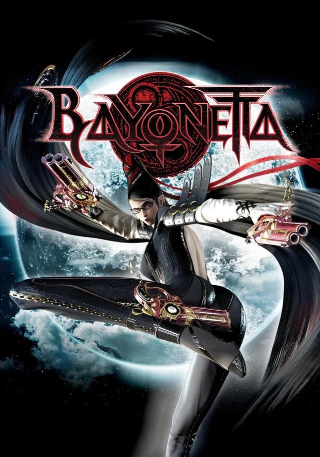

Bayonetta é um jogo de ação no estilo hack and slash desenvolvido pela PlatinumGames e dirigido por Hideki Kamiya. O jogo acompanha Bayonetta, uma poderosa bruxa que utiliza armas de fogo, magia e habilidades sobrenaturais para enfrentar hordas de anjos e outras criaturas. O combate é rápido e estilizado, permitindo combinar golpes corpo a corpo, disparos e ataques especiais em sequências elaboradas. Uma das principais mecânicas é o Witch Time, que desacelera temporariamente os inimigos quando o jogador realiza uma esquiva no momento exato de um ataque. Durante as batalhas, Bayonetta também pode invocar demônios para executar golpes devastadores contra adversários poderosos. Além dos combates, o jogo apresenta exploração, desafios opcionais e confrontos contra chefes de grande porte. A direção artística mistura cenários fantásticos, referências religiosas e elementos góticos, criando uma identidade visual bastante característica. A protagonista se destaca por sua personalidade confiante, seu humor provocador e seu estilo de luta extravagante. Com uma trilha sonora marcante e um sistema de combate que recompensa habilidade e precisão, Bayonetta se tornou uma referência entre os jogos de ação e um dos títulos mais reconhecidos da PlatinumGames.
18+ - recomendado para maiores de 18 anos
A história de Bayonetta acompanha uma bruxa que desperta após passar quinhentos anos adormecida, sem possuir lembranças completas de seu passado. Conhecida por sua habilidade em enfrentar criaturas sobrenaturais, ela parte em busca de respostas sobre sua identidade e sobre os acontecimentos que a levaram a perder suas memórias. Sua investigação a conduz até a cidade europeia de Vigrid, onde começa a encontrar pistas relacionadas aos misteriosos Olhos do Mundo e a um antigo conflito entre forças opostas. Durante a jornada, Bayonetta enfrenta anjos enviados para detê-la e encontra personagens que possuem conexões importantes com sua história, incluindo a jovem Cereza e o jornalista Luka. Aos poucos, ela descobre segredos sobre as bruxas de Umbra, os sábios de Lumen e o papel que sua própria existência desempenha no equilíbrio entre diferentes dimensões. Conforme os confrontos se intensificam, a protagonista precisa lidar com revelações sobre sua origem e enfrentar inimigos cada vez mais poderosos. A narrativa combina ação exagerada, humor e elementos de fantasia sombria, construindo um mistério que se desenvolve até o confronto final. A busca por suas memórias transforma-se em uma jornada sobre identidade, destino e as forças que moldam o universo do jogo.
29 de outubro de 2009, no Japão. O lançamento ocidental ocorreu em janeiro de 2010.
O preço varia conforme a plataforma, a edição e as promoções disponíveis.
Aproximadamente 20 GB no PC, podendo variar conforme a plataforma e a versão do jogo.